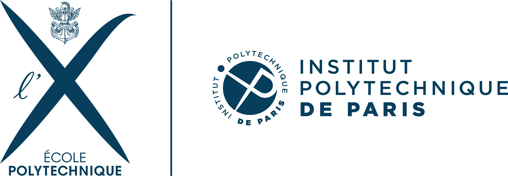
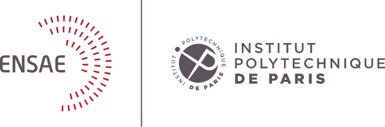
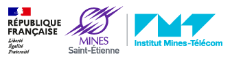
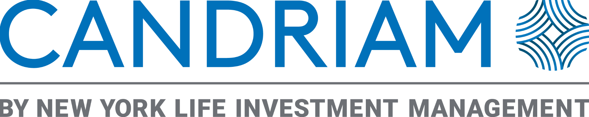
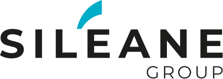

Learning which
pairs to trade.
During my final-year internship, I research pair selection through machine learning and how to combine it with complementary strategies.
Explore the presentationHi, I’m
I’m a final-year student at ENSAE Paris and a quantitative research intern at Candriam, working on machine learning for systematic equity strategies.
Open to Quantitative Research opportunitiesFull-time · January 2027Paris · London · Zurich
During my final-year internship, I research pair selection through machine learning and how to combine it with complementary strategies.
Explore the presentation
Institut Polytechnique de ParisMaster of ScienceStatistics & Finance2025 — 2026
ENSAE ParisMaster of EngineeringStatistics, Data Science & Machine Learning2022 — 2026
Mines Saint-ÉtienneMaster of EngineeringMathematics, Physics & Computer Science2022 — 2026
Quantitative Research InternCandriam · Systematic StrategiesMay 2026 — Nov 2026Supervised by Prof. Alessandro Riboni

Machine Learning InternSiléaneJun 2024 — Sep 2024